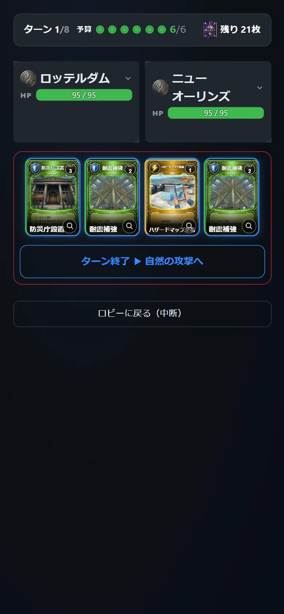
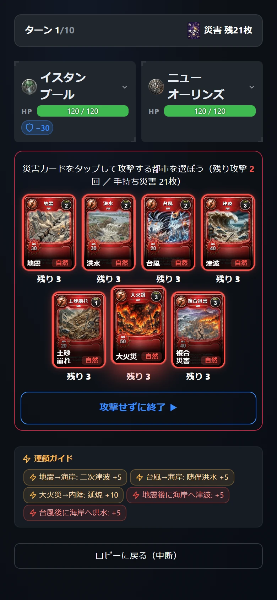
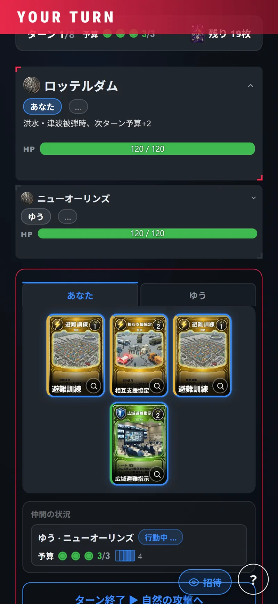

自然側 1人
ハザードを選び、都市を攻撃する。
ひとりの判断を、
協力 ／ 3〜5人 ／ 5〜7分


ハザードを選び、都市を攻撃する。
限られた予算を配り、仲間の街も守る。
都市側の全員が政策カードを使う。自分の予算で仲間の都市を助けることもできる。
自然側がハザードカードを選び、都市を攻撃する。
攻撃された都市は政策カードで被害を軽減できる。

ダメージ・回復を確認し、次のターンの都市フェーズへ。
VERSUSでは1人が守りと攻めを同時にこなす。CO-OPは違う。1試合のあいだ、自然側か都市側のどちらか一方に専念する。役割が固定されるぶん、その視点の思考が深くなる。
自然側はハザードを選び、都市側は曝露と脆弱性を操作する。自然側を一度でも担当すると「都市の壊滅を狙え」という視点で盤面を見ることになり、曝露の高い都市がなぜ狙われるのかが体感で分かる。守る側だけを遊んでいては得られない視点である。
都市側は資源配分を全員で合議する、共助の意思決定そのものを体験する。誰かの都市が壊滅しても後方支援や復興で立て直せるため、「誰の街を先に救うか」というトリアージの判断が発生する。
そして両方の側を遊べば、同じ災害リスクの式を、最小化する側と最大化する側の両方から見たことになる。守りと攻めは、同じ式の裏表である。
1人が自然側となりハザードを選び、残る都市側の全員（最大4人）で街を守る。都市側は限られた予算をどの都市に配分するかを、全員で判断しながら進める。自分の都市だけでなく、仲間の担当する都市にも政策カードを使える。
都市が壊滅しても終わりではない。壊滅した都市の担当者は後方支援に回り、毎ターン貯まる予算で生存中の仲間にシールドや回復を送れる。加えて、部屋の設定次第で復興（0〜3回・既定1回）を使い、生存都市プレイヤー全員の承認を得れば、提供した分と同じHPで都市を復活させられる。
対戦と決定的に違うのは、1試合につき自然側か都市側のどちらか一方しか担当できないことである。攻守を持ち替えない分、その視点の思考が深くなる。1試合5〜7分と長く、友達と大人数で腰を据えて遊ぶ側の醍醐味がある。